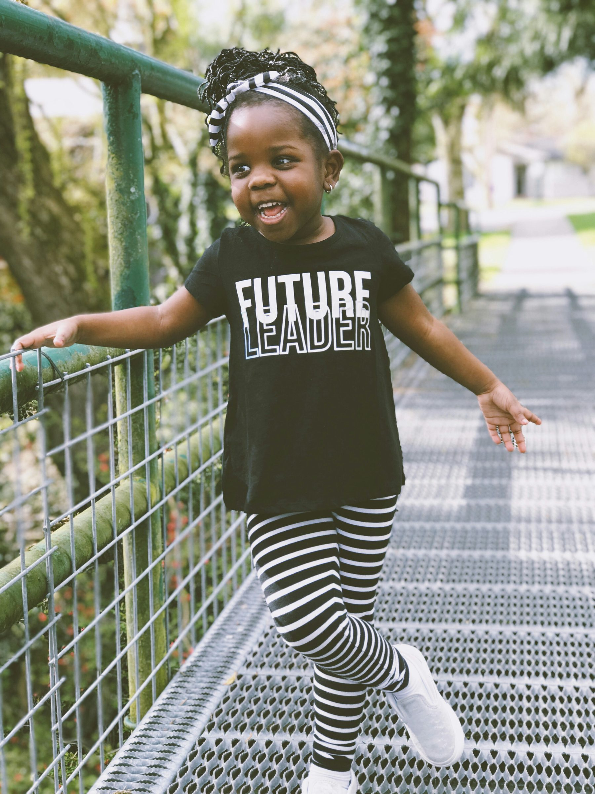

Pro bono and deeply discounted 1:1 and group coaching for professionals who've long been excluded from the guidance and networks that accelerate careers.
Apply for Coaching Access
Future Leaders Movement is a nonprofit that connects talented, driven professionals with the coaching and career support they need to grow, and to step into roles they've long been excluded from.
We focus on individuals who have the skills and ambition to lead, but haven't had the same access to guidance, networks, or career-defining opportunities. Through pro bono and deeply discounted 1:1 and group coaching, we help close that gap and accelerate professional growth where it's long overdue.
Since our founding, we've delivered over 200 hours of coaching through a growing bench of renowned, hand-selected coaches, and we're just getting started.
We help people get hired, promoted, and recognized for the leadership they already bring to the table.
We equip emerging leaders with coaching designed to accelerate growth, increase earning potential, and open doors to meaningful opportunities. Our current model offers pro bono and discounted 1:1 and group coaching, along with practical job search tools and career strategy.
We work with individuals from all backgrounds who have faced barriers to advancement, not because of a lack of ability, but a lack of access. A career pivot, a step up into leadership, a hard stretch you're trying to get through: we're here to help you move forward with clarity and confidence.
Coaching support includes:
"We are working toward a future where children from all backgrounds see themselves represented in roles that shape our world, with relatable role models that inspire them to believe that their voices matter and dreams are within reach."
— Kayla Vatalaro, Founder
We envision a future where leadership includes voices from every community, and where talent from all backgrounds has the tools to succeed.
Our mission is to expand access to meaningful career growth and leadership development by supporting professionals who have historically faced barriers to opportunity. When overlooked professionals rise, they bring others with them.
"You all have connected me to [a coach] who has incredible empathy. Her understanding of my work challenges has been instrumental in supporting my journey of driving community change and developing my mentorship abilities."
— Jerrod H.
"Receiving the Future Leaders grant has been an emotional and powerful journey. The cultural understanding and nuance the coach brought to our sessions made all the difference, helping me navigate my career with newfound confidence and balance."
— Annie (Ziwei) Z.
"The coaching I received through the Future Leaders grant was more than just professional development. It was a support system like I've never had before."
— Yash A.
"Two years ago, I never thought I'd work outside of retail, let alone in tech. I was introduced to a coach who gave me the support and guidance to break into the tech industry… it's transformed my life and financial future."
— Natalia H.